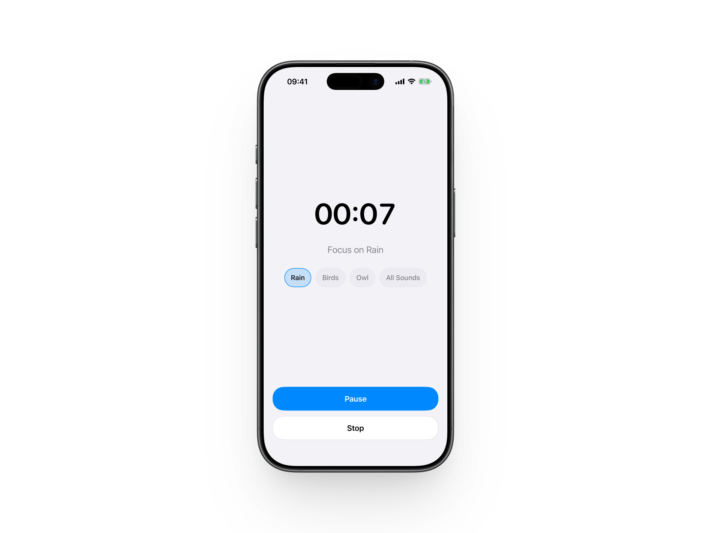

The essential CBT Attention Training Timer for mastering the Attention Training Technique (ATT).

Attention Timer is a specialized utility designed to support Cognitive Behavioral Therapy (CBT) protocols, providing the focus needed for effective ATT sessions.
Specifically calibrated for the auditory and spatial attentional shifts required in clinical attention training.
Your mental health practice is private. We collect zero data and use no third-party tracking.